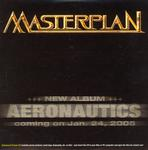

| Artist: | Masterplan |
| Title: | Aeronautics |
| Label: | AFM Records AFM 084-2/AFM 084-9 |
| Length(s): | 54 minutes |
| Year(s) of release: | 2005 |
| Month of review: | [04/2005] |
| 1) | Crimson Rider | 3.53 |
| 2) | Back For My Life | 4.10 |
| 3) | Wounds | 4.01 |
| 4) | I'm Not Afraid | 5.27 |
| 5) | Headbangers Ballroom | 4.51 |
| 6) | After This War | 3.49 |
| 7) | Into The Arena | 4.01 |
| 8) | Dark From The Dying | 4.08 |
| 9) | Falling Sparrow | 5.30 |
| 10) | Black In The Burn | 9.39 |